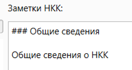
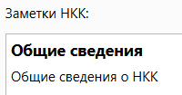
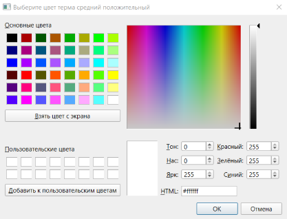
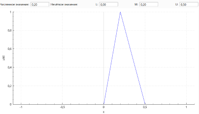

1. The main model parameters are configured on the model settings tab. This tab opens when the application starts. To switch to this tab from another tab, click the "Model settings" header.
2. To set the model name, enter it in the "FCM name" field.
3. To edit model notes in Markdown format, use the field labeled "FCM notes":
3.1. While text is being entered, it is shown as plain text without rendering Markdown elements.

3.2. When the notes input field is inactive, the text is displayed with Markdown formatting.

3.3. To switch to notes editing mode, click inside the notes field.
3.4. To switch back to notes preview mode, click anywhere outside the notes field, including outside the application window, or use the "Ctrl + Enter" shortcut.
4. To add a concept term, click the "Concepts terms" item in the "Terms" list. After that, the "Add" button becomes active. Clicking it adds a new term with the default name "New term". All term value parameters are initially set to 0.
5. If a concept term is currently selected in the corresponding list item, pressing "Add" creates one more concept term.
6. Weight terms are added in the same way by using the "Weight terms" item in the terms list.
7. If the "Automatic color configuration" option is enabled, term colors are configured according to the specified numeric and fuzzy term values. If this option is disabled, the initial colors are configured from the default term values and are not changed automatically afterwards. Term colors can also be changed manually by using the palette opened with the "Color" button. The color of this button shows the current term color.

8. The numeric term value is set in the "Numeric value" field. The triangular fuzzy term value is specified using the "L", "M", and "U" fields. The membership function of the fuzzy value is shown on the chart. All concept term values must be in the range from 0 to 1, and all weight term values must be in the range from -1 to 1.

9. To add comments related to a term, use the "Term notes" field in the lower part of the window. This field works in the same way as the model notes field described in item 3 of this section.
10. To rename a term, double-click its name in the terms list and enter a new name.
11. To delete the current term, click the "Delete" button.